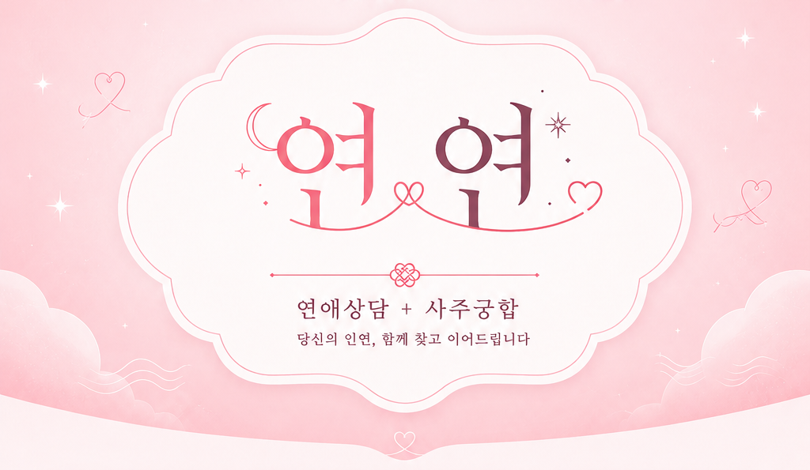
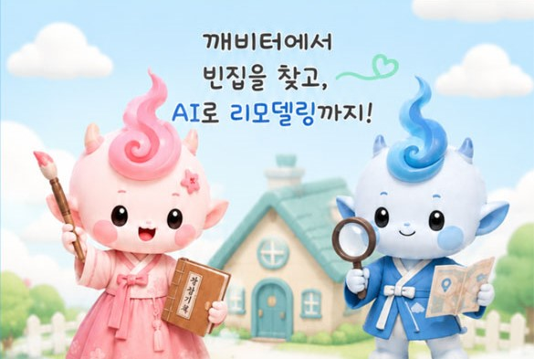
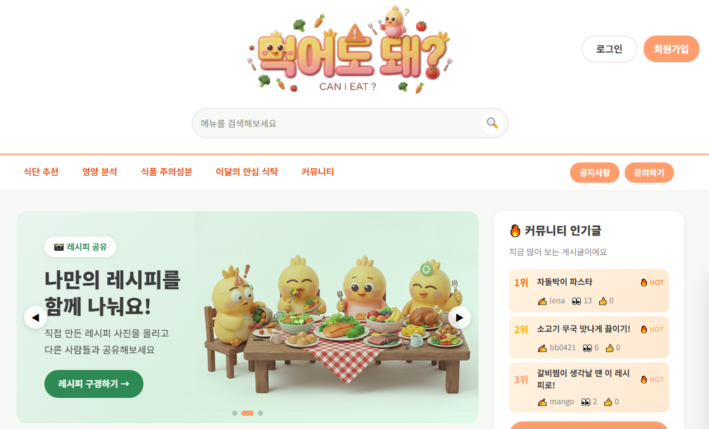
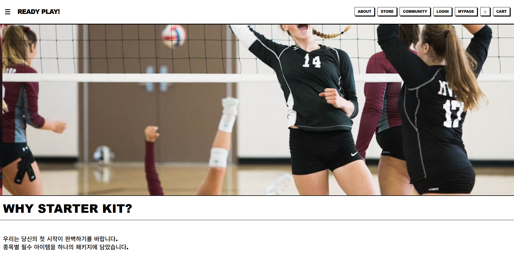

01
ABOUT
소개문제를 만나면 원인을 구분해서 끝까지 파고드는 방식으로 일합니다.
반갑습니다. 백엔드 개발자 정윤서입니다. 도면을 그리던 정밀함을 그대로 코드에 옮기고 있습니다.
STRENGTH — 01
PRECISION
정밀
도면을 그리던 꼼꼼함으로 코드를 봅니다. 반도체 FAB 배관설계에서 다져진 정밀함을 디버깅과 코드 리뷰에 그대로 적용합니다.
STRENGTH — 02
ROOT CAUSE
추적
'왜'가 풀릴 때까지 파고듭니다. 같은 API 오류라도 429와 503의 원인을 구분해 각각 다른 해결책을 설계합니다.
STRENGTH — 03
DRIVE
실행
고민을 실행으로 옮깁니다. '먹어도 돼?' 백엔드 팀장, '연연' 팀장으로서 협업 구조와 문서화를 직접 설계하고 팀을 움직였습니다.
02
PROJECTS
프로젝트 · 클릭해서 상세 보기
01
IMAGE

연연
연애상담과 사주궁합을 결합한 AI CRM 플랫폼
02
IMAGE

깨비터
빈집 매칭 및 AI 리모델링 시뮬레이션 앱 · 충청북도 공공데이터 AI 활용 창업경진대회 출품. 예선 1등.
03
IMAGE

먹어도 돼?
개인별 맞춤형 식단 추천과 영양 분석 서비스 · AI 챗봇과 AI 퍼스널 주간 식단 계획
04
IMAGE

레디플레이
스포츠 입문자를 위한 큐레이션 커머스 웹사이트
03
SKILLS
기술 스택LANGUAGES
FRAMEWORKS & LIBRARIES
DATABASE & INFRA
AI / API
TOOLS
04
EXPERIENCE
경험2026.02 — 2026.08
하이미디어IT인재개발학원 — KDT 부트캠프
Java와 생성형 AI를 활용한 차세대 CRM 플랫폼 개발 과정 수강.
2024.06 — 2025.08
(주)케이씨이앤씨 — 반도체 FAB 배관설계
삼성 반도체 P4 FAB 배관 설계 업무 수행. 정밀한 공정 이해와 문서화 역량을 쌓음.
04-1
CERTIFICATES
자격증합격 · 2026.07.28
컴퓨터활용능력 2급
필기 합격 · 실기 준비 중
정보처리기사
필기 합격 · 실기 준비 중
정보처리산업기사
04-2
EDUCATION
학력2012.03 — 2017.02
건국대학교(글로컬) — 동화미디어콘텐츠학과
STILL MILES
TO GO.
원인이 풀릴 때까지 파고듭니다. 알게 된 만큼 모르는 것도 늘어서, 아직 갈 길이 멉니다.
SEND E-MAIL →